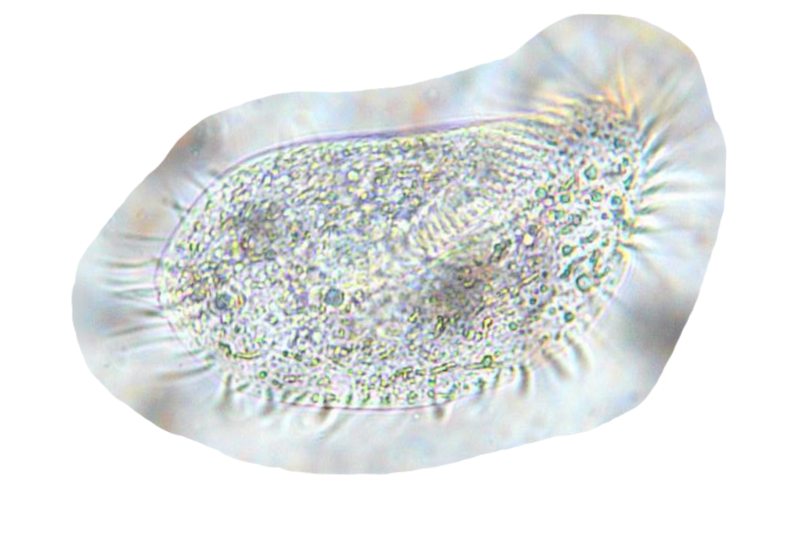

Field notes

1% organic matter. Fewest pests.
Microorganisms applied as teas and extracts occupy the surfaces pests would otherwise colonise. That is a different mechanism from building soil structure, and one season cannot separate them.
Source: Sandra Niggemeyer, field trial report, 2026, Van, Texas. Microscopy from the Foundation archive.